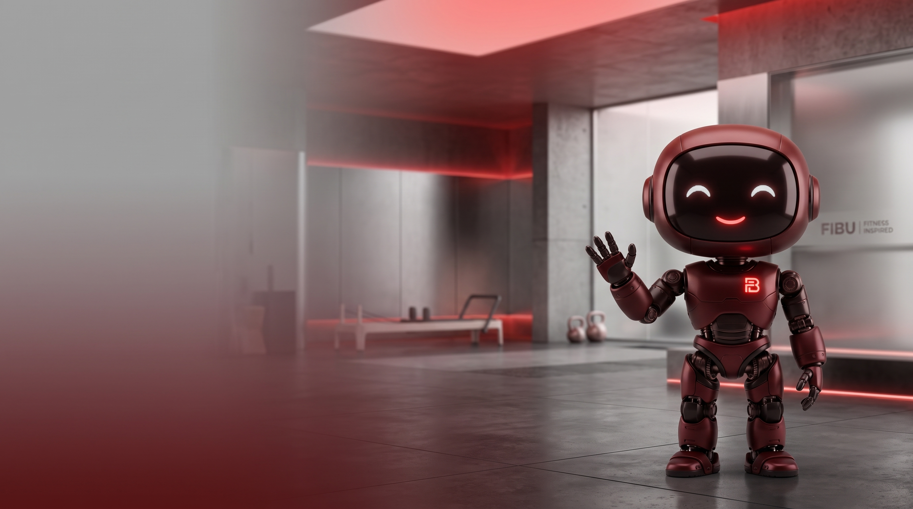

Every set, every PR, every muscle worked — logged, not guessed. Built for one person's real gym routine, structured to grow into a tool for coaches.

01 — Essence
Fibu exists for one job: log whatever you actually did today — no forced schedule, no locked-in exercise list — and turn that into a running record of your own progressive overload. It knows the day, it has an opinion on your next set, and it never pretends a rough session was a great one. Energetic, not precious. Direct, not clinical.
02 — Logo
An F built from three straight blocks, cut through by a single bolt. The bolt is the only diagonal, the only red, and the only thing that's ever allowed to move — it's the "overload" moment in the mark.
03 — Color
One accent, rationed. Red marks progress and action — a PR badge, a primary button, the day's progress bar — never twice for two different meanings on the same screen. White is the dominant ground by default; dark is an explicit choice (try the toggle above), not something the OS decides for the user. Ratios below are computed against the surface each color actually sits on, not eyeballed.
| Token | Light (default) | Dark |
|---|---|---|
| Bg | #FAF9F7 | #0C0C0E |
| Surface | #FFFFFF | #171719 |
| Text | #141312 | #F2F1EE |
| Muted | #55534F | #A8A8AC |
| Faint | #706D66 | #838280 |
| Danger | #C2410C | #FF8A4C |
| Red (fixed) | #EC3346 | #EC3346 |
04 — Typography
A geometric display face for numbers and headings — reps, weights, and scores need to read as data, not prose — paired with a warmer humanist body face for everything you actually read. A monospace carries specs and hex values in documents like this one; the app itself never needs it.
05 — Mascot
The oxblood-red robot in the hero above is Fibu's mascot for marketing surfaces — splash art, app store listing, social, documents like this one — not for the in-app interface. That's a deliberate scope call: a minimal, card-based workout logger has no room for an illustrated character without competing for attention against the actual sets and numbers.
Its own palette (deep oxblood body, black joints, white glowing face) stays separate from the app's red/white/black system — it's a character, not a UI color.
06 — Voice
Short sentences. No fitness-influencer clichés. Fibu tells you what happened and what to do next — it doesn't perform enthusiasm. These are real lines already shipping in the app, not invented for this page.